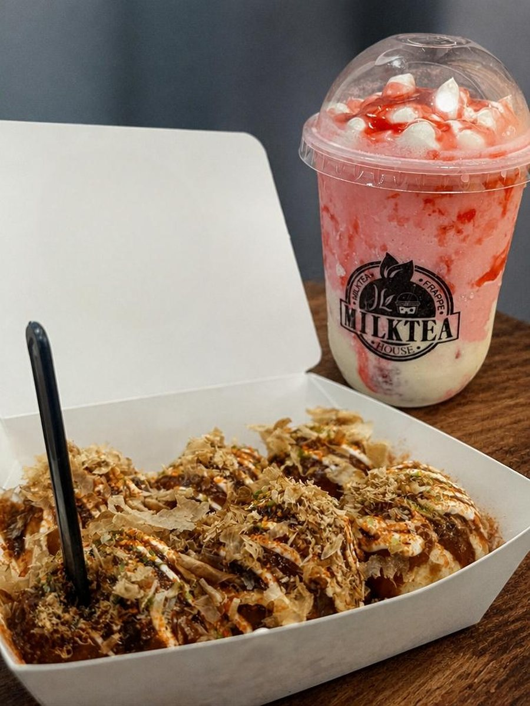

Systematic
I enjoy bringing structure, clean architecture, and clear solutions to complex coding tasks and projects.
A bit about me…
I am constantly growing my skills in technology, programming, web development, and computer systems through my school projects, believing that every experience helps me learn something new.
I am Anabelle Mandeoya, a 23 year old Information Technology student from Taytay, Rizal studying at ICCT Colleges, and I am a hardworking and responsible person who loves learning, exploring new interests, and finding ways to grow.
I enjoy bringing structure, clean architecture, and clear solutions to complex coding tasks and projects.
I love turning fresh ideas into practical, visually engaging web projects and functional web applications.
I continually expand my skills in software development, web technologies, and digital tools.
Every academic challenge teaches me the true value of consistency, patience, and resilience.
Most importantly, I am a mother. Motherhood has given me profound responsibility, strength, and perseverance, and it continuously motivates me to work hard, keep learning, and build a brighter future.
A few of the things I enjoy and love the most.
Tulips are my favorite flowers. I love their soft colors and graceful shape, and they always bring a calm, happy feeling wherever they are. Holding a bunch of them makes an ordinary day feel a little brighter.

Takoyaki is my most favorite food, with its crispy outside, soft and gooey inside, and a generous topping of sauce, mayo, and bonito flakes. I love pairing it with a cold, creamy praffe, and together they make the perfect treat.
I love watching K-dramas, from heartwarming romances to thrilling stories that keep me guessing until the last episode. I also enjoy listening to true horror stories, which give me chills and a fun way to unwind.